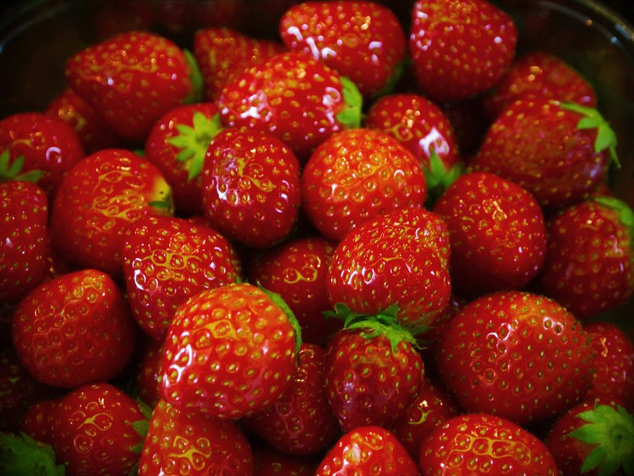
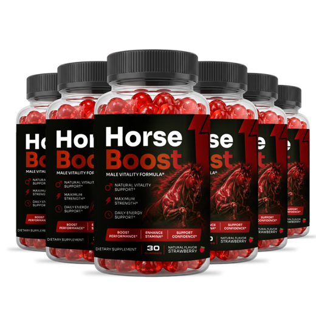
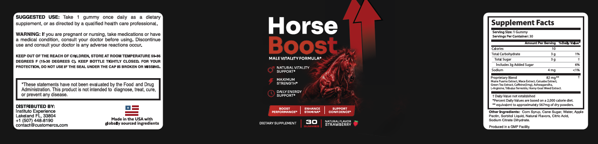

Horse Boost Ingredients: All 9, Traditional Use vs Evidence
Nine names, one 82 mg blend and a single printed dose. Here's what each ingredient was used for, what studies show, and how much can fit in one gummy.

Key takeaways
- Nine ingredients share 82 mg. Muira puama, maca, catuaba, green tea, caffeine, ashwagandha, L-arginine, tribulus and horny goat weed.
- Only caffeine has a printed amount: 5 mg. The other eight are hidden inside a proprietary blend.
- List order gives a clue. Blend ingredients must be listed by weight, so the four after caffeine are likely 5 mg or less each.
- "567 mg of dry powders" is not 567 mg in the gummy. It's the raw plant weight the extracts were made from.
- Maca and ashwagandha carry the evidence. Both are studied at hundreds or thousands of milligrams, far above what this blend can hold.
Horse Boost ingredients, straight from the label: an 82 mg proprietary blend of muira puama extract, maca extract, catuaba extract, green tea extract, caffeine (5 mg), ashwagandha, L-arginine, tribulus terrestris and horny goat weed extract. That sits in a strawberry gummy made of corn syrup, cane sugar, apple pectin and flavorings, with 10 calories and 3 g of sugar.
Nothing on that list comes from a horse, by the way. The name is a marketing image. Below, we go through each HorseBoost ingredient: what it was traditionally used for, what controlled research shows, and how much of it a blend this size can realistically contain. For the price, refund terms and overall verdict, see our full Horse Boost review.

HorseBoost: check today's price
A once-daily strawberry men's vitality gummy with maca, muira puama, tribulus and horny goat weed. Sold only on the official site, with a 60-day money-back guarantee.
See the official price →What ingredients are in Horse Boost?
Here's the full panel as printed at the time of writing. The "research amount" column shows the daily dose used in human studies where one exists. We don't know the per-gummy split, so the middle column says what the label actually tells you.
| Ingredient | On the label | Research amount | Traditional use |
|---|---|---|---|
| Muira puama extract | In 82 mg blend | No reliable human dose | Amazonian tonic for vigor |
| Maca extract | In 82 mg blend | 1,500 to 3,000 mg (root powder) | Andean food for energy and fertility |
| Catuaba extract | In 82 mg blend | No human trials | Brazilian bark tonic |
| Green tea extract | In 82 mg blend | Varies by catechin content | Daily tea, antioxidant |
| Caffeine | 5 mg | 40 to 200 mg for alertness | Stimulant |
| Ashwagandha | In 82 mg blend | 300 to 600 mg extract | Ayurvedic tonic for stress and strength |
| L-arginine | In 82 mg blend | 3,000 to 6,000 mg | Amino acid, nitric oxide source |
| Tribulus terrestris | In 82 mg blend | 250 to 750 mg extract | Ayurvedic and Chinese tonic |
| Horny goat weed extract | In 82 mg blend | No established human dose | Chinese herb for vitality |

Look at the list as a whole and a pattern shows up. It's built from three traditions: South American tonics (muira puama, catuaba, maca), Asian herbal medicine (ashwagandha, tribulus, horny goat weed) and modern sports nutrition (L-arginine, caffeine, green tea). That kind of mix is common in men's vitality products. It covers a lot of marketing ground, and it spreads a small total weight very thin.
What does "equivalent to 567 mg of dry powders" mean?
Under the blend, a footnote says it's "equivalent to approximately 567 mg of dry powders." People read that as 567 mg of herbs in the gummy. It isn't.
Botanical extracts are made by soaking dried plant material in a solvent, then concentrating what dissolves. A 10:1 extract means 10 mg of dried plant went into 1 mg of extract. The footnote says the 82 mg of material in the blend came from roughly 567 mg of starting powder. That works out to an average ratio of about 7 to 1.
Three caveats keep that number in proportion:
- Caffeine and L-arginine aren't extracts. They're single compounds, so the ratio doesn't apply to them and they add nothing to the "equivalent" weight in a meaningful way.
- Concentration helps only if the compounds that matter are the ones concentrated. Studies on maca, for example, mostly used whole root powder, not extracts, so an extract ratio doesn't map neatly onto study doses.
- The label doesn't say which ratio applies to which herb. A 7:1 average could hide a strong extract of one ingredient and a weak one of another.
So the footnote is honest information, and it's more than many labels give. It still doesn't tell you the dose of any single ingredient.
Why does the order of the ingredient list matter?
FDA rules on supplement labels say that ingredients inside a proprietary blend must be listed in descending order of predominance by weight. That turns the list into a rough measuring tape.
Caffeine sits fifth, at 5 mg. If the label follows the rule, everything before it weighs at least 5 mg, and everything after it weighs 5 mg or less. That puts ashwagandha, L-arginine, tribulus and horny goat weed at no more than 5 mg each, or 20 mg combined at most. Muira puama, maca, catuaba and green tea share the rest, at least 57 mg among them.
Those are ceilings and floors, not exact amounts. They're the closest anyone can get from the outside, and they reshape how you should read the formula. The ingredients with the most marketing weight in men's products (tribulus, horny goat weed, arginine) are the ones the list places last.
It also explains why the label's front leans on the overall formula rather than any single herb. When the doses are this small, no one ingredient can carry the claim alone.
Muira puama and catuaba: what do the Brazilian barks do?
Muira puama
Muira puama (Ptychopetalum olacoides) is a small Amazonian tree whose bark and root have been used in Brazilian folk medicine as a tonic for fatigue and low libido. It leads the HorseBoost list, so it's likely the largest single ingredient.
The human evidence is thin. A couple of small reports from the 1990s and early 2000s described improved libido in men and women, but they weren't the kind of placebo-controlled trials that settle a question. Animal studies suggest effects on memory and mood. No modern dose has been established.
Catuaba
Catuaba is a name used for the bark of several Brazilian trees, most often Trichilia catigua or Erythroxylum catuaba, which makes it hard to know what any product contains. It has a long folk reputation as an aphrodisiac and nerve tonic. Research consists of lab and animal studies, mostly on mood and blood vessels. There are no human trials worth citing for sexual function.
Is maca the best-studied ingredient in Horse Boost?
Yes. Maca (Lepidium meyenii) is a root vegetable grown high in the Peruvian Andes and eaten as food for centuries. It's the one HorseBoost ingredient with a modest body of randomized trials behind it.
Small trials in healthy men found improved self-reported sexual desire after about 8 to 12 weeks at 1.5 to 3 g a day, compared with placebo. One trial in men with mild erectile complaints reported small improvements in questionnaire scores. Trials in other groups, including postmenopausal women and people with antidepressant-related sexual side effects, have shown similar small effects, which supports the idea that the signal is real if modest. Maca doesn't seem to change testosterone or other hormone levels, which surprises people who expect it to. Systematic reviews call the evidence promising but limited, based on few, small studies.
Maca also comes in colors (yellow, red and black root), and some researchers think black maca matters more for men. The HorseBoost label just says maca extract, so the type isn't specified.
Here's the catch. Maca is second in the blend, so it may be one of the larger ingredients, yet the whole blend is 82 mg. Even as a concentrated extract, it's unlikely to match the grams used in studies.
What do green tea extract and 5 mg of caffeine add?
Green tea extract brings catechins such as EGCG, antioxidants studied mainly for heart and metabolic health. It's not a libido ingredient, and in this formula it likely supplies a little natural caffeine too. Our article on green tea and brain health covers the catechin research.
The caffeine is listed separately at 5 mg. An 8 oz cup of brewed coffee has roughly 80 to 100 mg, and a cup of green tea about 30 to 50 mg. So one gummy gives you somewhere around a twentieth of a coffee. Most people won't feel it. It's small enough that the main reason to track it is if you're very sensitive or already near your limit.
How much ashwagandha, L-arginine, tribulus and horny goat weed can there be?
Going by the list order, five milligrams or less of each. Here's why that matters for every one of them.
Ashwagandha
Ashwagandha (Withania somnifera) is an Ayurvedic root used as a general tonic. It has the best modern evidence of any herb in the blend for stress, with several randomized trials showing lower perceived stress at 300 to 600 mg of extract a day. A few small trials in men have reported higher testosterone or better strength-training results at similar doses. At 5 mg or less, it's present at about 1% of the lowest studied amount. More on the herb in our ashwagandha guide.
L-arginine
L-arginine is an amino acid the body uses to make nitric oxide, which relaxes blood vessels. Trials related to erectile function used 3 to 6 g a day, often combined with pine bark extract. At 5 mg or less, it's more than a thousand times below that. You also get several grams of arginine a day from ordinary protein foods.
Tribulus terrestris
Tribulus is a spiny plant used in Ayurvedic and Chinese medicine and heavily marketed for testosterone. Reviews of controlled trials have found it doesn't raise testosterone in healthy men. A few trials report improved libido scores at 250 to 750 mg of extract, with mixed results.
Horny goat weed
Horny goat weed (Epimedium) gets its name from a Chinese legend about goats. Its main compound, icariin, inhibits the same blood-vessel enzyme targeted by some ED drugs, but only weakly and only in lab dishes and animal studies. Human trials are lacking, and nobody knows what dose would matter.
What are the other ingredients in HorseBoost gummies?
The non-active part of the gummy is what you actually chew. It reads: corn syrup, cane sugar, water, apple pectin, sorbitol liquid, natural flavors, citric acid and sodium citrate dihydrate.
- Corn syrup and cane sugar supply the 3 g of added sugar (6% of the daily value) and most of the 10 calories.
- Apple pectin is the gelling agent. No gelatin is listed, which matters to some vegetarians, though the label doesn't claim to be vegan.
- Sorbitol is a sugar alcohol that keeps the gummy soft. In large amounts it can cause loose stools; one gummy carries little.
- Citric acid and sodium citrate adjust tartness and acidity. Sodium totals 4 mg.
Are Horse Boost and Vigor Boost ingredients the same?
The active blend is the same: 82 mg, the same nine ingredients in the same order. HorseBoost has 5 mg of caffeine, 3 g of sugar and strawberry flavor. Vigor Boost lists 10 mg of caffeine and 2 g of sugar. Everything we've said about doses applies to both. Our Vigor Boost vs Horse Boost comparison covers the rest.
So is the Horse Boost formula any good?
It's a recognizable traditional men's formula, printed openly, with two ingredients (maca and ashwagandha) that have real if modest research. Its weakness is size. Eighty-two milligrams can't hold studied amounts of nine ingredients, and the blend format means you can't check which ones get the most room.
If we could change one thing on the label, it would be printing the amount of maca and ashwagandha. Those are the two ingredients a buyer can actually compare with published trials. The rest have so little human data that a printed dose wouldn't tell you much either way.
If you want any one of these ingredients at a studied dose, a single-ingredient product with a printed amount will get you closer. If you like the convenience of one daily gummy and accept that the effect, if any, is likely mild, HorseBoost is at least transparent about what it contains. Either way, new or ongoing erection problems deserve a doctor visit, since they can be an early sign of heart disease, diabetes or low testosterone. More on that in our article on whether Horse Boost works, and in our men's health section.
HorseBoost: check today's price
A once-daily strawberry men's vitality gummy with maca, muira puama, tribulus and horny goat weed. Sold only on the official site, with a 60-day money-back guarantee.
See the official price →Frequently asked questions
Does Horse Boost contain any horse product?
No. None of the nine actives or eight other ingredients comes from horses or any other animal. The horse on the bottle is branding.
Is there yohimbe in HorseBoost?
No. Yohimbe isn't on the label. The blend is muira puama, maca, catuaba, green tea, caffeine, ashwagandha, L-arginine, tribulus and horny goat weed.
Is Horse Boost gluten-free?
The label doesn't make a gluten-free claim. None of the listed ingredients is a gluten grain, but without a claim or certification you can't rule out cross-contact, so people with celiac disease should ask the seller.
Why don't supplement companies print each dose in a blend?
The law allows proprietary blends to show only the total weight. Companies say it protects their formula from copycats. The cost to buyers is that nobody can compare the doses to research.
Is the caffeine in Horse Boost from green tea?
The label lists green tea extract and caffeine as separate entries, with 5 mg for caffeine. Green tea extract may add a little more natural caffeine, which the label doesn't quantify.
Can I buy these ingredients separately?
Yes. Maca powder, ashwagandha extract and L-arginine are sold as single-ingredient supplements with printed doses. That's the only way to take any of them at the amounts used in studies.
Checked the ingredients? Check the price.
HorseBoost lists all nine ingredients and backs official orders with a 60-day money-back guarantee. See the current package prices on the official page.
See HorseBoost's official price →Related: Horse Boost review 2026 · Ashwagandha for stress · Green tea and brain health
Image: Sander van der Wel / CC BY-SA 2.0